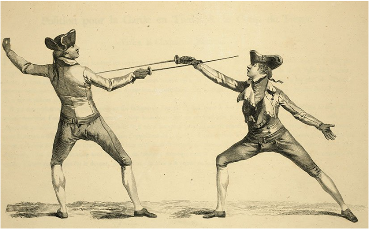

Sabre History
Sabre fencing, one of the three disciplines in modern competitive fencing (alongside foil and épée), has its origins rooted in cavalry warfare and evolved from a type of curved, single-edged sword historically used by light cavalry and infantry. Here's a historical overview of sabre fencing

Early History and Origins
Ancient to Medieval Times: The earliest influences of sabre fencing can be traced to the ancient civilizations, where curved swords were common in mounted combat. Sabres, particularly in Central Asia, Persia, and Eastern Europe, were used by mounted warriors, as the curved blade was effective for slashing from horseback.
17th to 18th Century: The modern sabre’s roots developed largely in Eastern Europe, particularly with the Hungarian hussars (light cavalry), who adopted and adapted the curved swords of the Ottoman Turks during the 16th and 17th centuries. These sabres were designed for cutting and slashing, ideal for horseback combat, and became symbolic weapons for cavalry units across Europe.
Transition to Fencing Sport
By the late 19th century, as cavalry warfare became less common due to advancements in firearms, the sabre began transitioning from a battlefield weapon to a fencing sport. In Italy and Hungary, the tradition of sabre fencing flourished as a means of practicing for duels or military training. The Italian masters, in particular, were instrumental in codifying sabre fencing techniques and developing the art into a formal sport. They introduced a straighter sabre blade, which was easier to fence with than the heavier, curved battlefield sabre.
Hungary also became a center for sabre fencing excellence, with a distinct style emphasizing speed and aggressive cutting actions. By the 19th century, Hungarian fencing masters were among the best in the world, and their influence shaped modern sabre fencing.
Introduction to the Olympics
Sabre fencing was included in the very first modern Olympic Games in 1896 in Athens. Unlike foil and épée, where the point of the weapon is used to score touches, in sabre, the entire blade can be used to score hits. This made the discipline faster and more dynamic. Initially, sabre competitions in the Olympics were dominated by Hungarian and Italian fencers, reflecting the strong traditions in those countries.